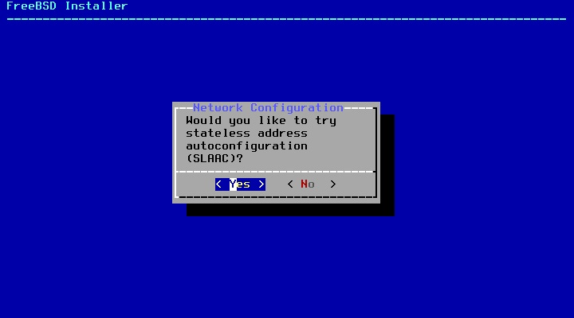

Instalação Básica de Sistemas Operacionais - FreeBSD
Introdução
AVISO: NÃO RECOMENDO A INSTALAÇÃO DO FREEBSD EM MODO UEFI
Como proceder:
- Para navegar nos menus utilize as setas (←↑↓→)
- Para alterar o campo de seleção tecle ↹ Tab
- Para selecionar as opções ( * ) nos menus tecle Espaço
- Enter ⏎ quando quiser confirmar a seleção.
Essa é a tela de boas vindas do FreeBSD, tecle Enter ou aguarde o fim da contagem

Selecione "Install" para iniciar o processo de instalação

Selecione "Brazilian (accent keys)" e depois "Continue with br.kbd keymap"
Se quiser você pode testar o teclado em "Test br.kbd keymap"

Escolha o hostname (o nome que identifica o seu computador na rede)

Selecione os componentes (utilizando a barra de espaço como foi dito acima), recomendo o lib32 e o src. Aperte Enter para continuar

Para particionamento a nível de usuário final recomendo Auto (UFS)

Selecione "Entire Disk"

Na tabela de partição recomendo MBR (para BIOS) e GPT para (UEFI)

Caso esteja de acordo com a tabela de partição selecione "Finish"

Caso esteja de acordo com as alterações em disco selecione "Commit"
ALERTA: TODOS OS DADOS NO DISCO SERÃO PERDIDOS! TENHA A CERTEZA DE TER SELECIONADO O DISCO CORRETO E/OU TER FEITO BACKUP ANTES DE PROSSEGUIR!

Aguarde o fetch...

E o extract...

Insira a senha de administrador da máquina (root)

Selecione a interface de rede
AVISO: Nesse caso estou instalando numa interface a cabo, caso esteja utilizando uma interface de rede sem fio você deve selecionar o orgão regulador (FCC, Brazil), a rede e senha da sua conexão (não obtive sucesso ao conectar no Wifi com caracteres especiais)

Selecione se você quer utilizar IPv4 para essa interface (caso esteja em dúvida selecione sim)

Selecione se você quiser habilitar DHCP (caso esteja em dúvida selecione sim)

Selecione se você quer utilizar IPv6 para essa interface (caso esteja em dúvida selecione sim)

Selecione se você quer utilizar SLAAC para essa interface (caso esteja em dúvida selecione sim)

Caso deseje você pode configurar o IP de DNS (por padrão será carregado o ip do gateway, caso esteja em dúvida selecione OK)
Recomendo o uso do OpenDNS (IPs 208.67.222.222/208.67.220.220 para IPv4 e 2620:119:35::35/2620:119:53::53 para IPv6)

Selecione a sua região (America > Brazil > Estado)

Confirme

Caso a data esteja correta selecione "Skip", caso contrário altere em "Set Date"

Caso a hora esteja correta selecione "Skip", caso contrário altere em "Set Time"

Selecione (com barra de espaço) os serviços para serem iniciados no boot, recomendo deixar marcado ntpd e powerd

Aqui são as opções de enrigecimento de segurança, recomendo marcar clear_tmp, disable_syslogd, disable_sendmail, secure_console, disable_ddtrace

Selecione "Yes" para adicionar o seu usuário no sistema

Username: insira aqui seu nome de usuário
Full name: apenas tecle Enter
Uid: apenas tecle Enter
Login group: apenas tecle Enter
Login group is . Invite into other groups? []: wheel (para acesso administrativo e video, ou você pode simplesmente adicionar ao grupo "video" se não quiser ceder acesso administrativo a essa conta)
Login class [default]: apenas tecle Enter
Shell: apenas tecle Enter
Home Directory: apenas tecle Enter
Home Directory Permissions: apenas tecle Enter
Use an empty password?: apenas tecle Enter
Use a random password?: apenas tecle Enter
Enter password: insira aqui sua senha
Enter password again: confirme sua senha
Lock out the account after creation?: tecle Enter
Ok?: yes
Add another user?: no

Selecione "Exit" (a menos que queira alterar algo)

Selecione "No"

Selecione "Reboot" para concluir a instalação e reiniciar a máquina para o sistema instalado

Pós Instalação
Assim que o sistema iniciar logue na conta de administrador (login: root - senha: a senha que você digitou para acesso administrativo)

Vamos começar a preparar o sistema:

para atualizar o núcleo do sistema use "freebsd-update fetch install"
Insira o comando "pkg update && upgrade" para atualizar os pacotes
Do you want to fetch and install it now?: y
Se aparecer "Your packages are up to date" significa que seu sistema já está devidamente atualizado
Caso tenha escolhido usar o ports use "portsnap auto" para fetch, extract e update do ports
Pronto! Seu sistema está devidamente instalado e atualizado... Mas ainda da pra melhorar.
Configuração para Usuário Final
Instalação de Desktop Environment
Se você está lendo isso as chances são que você não vai utilizar o FreeBSD como sistema de servidor. O FreeBSD pode ser utilizado normalmente como um sistema para usuário final, entretanto, Desktop Environments (ambientes gráficos) não são tão apreciadas no FreeBSD tanto quanto são apreciadas no universo Linux. Se você utilizar os fóruns vai ver que grande parte dos usuários prefere utilizar apenas um gerenciador de janelas (window manager) e não um ambiente completo (como o Cinnamon, por exemplo). Os recém chegados do Linux provavelmente instalam algum port de XFCE, MATE ou KDE, mas saiba que alguns ambientes aqui PODEM (não quer dizer que vão) ser problemáticos (ou simplesmente depreciados).
Isso não significa que você não pode ter uma excelente experiência utilizando o FreeBSD como daily driver, mas como esses ambientes recebem relativamente menos suporte e tem um público menor por aqui você não pode se der ao luxo de achar que pode simplesmente instalar um ambiente gráfico e dar por encerrado o seu dia. O FreeBSD separa muito bem o espaço de sistema e espaço de usuário e, independente do ambiente que você utilize você ainda terá que acessar uma camada mais íntima do sistema.
Instalação do Xorg
A primeira coisa que precisamos para instalar um ambiente gráfico é o Xorg, para instala-lo utilize o comando:
pkg install xorg
Proceed with this action? y
Instalação dos pacotes de Ambiente Gráfico
pkg install gdm gnome3 (para instalação do Gnome)
pkg install kde5 (para instalação do KDE)
pkg install xfce slim (para Instalação do XFCE)
pkg install mate slim (para Instalação do Mate)
pkg install lxqt slim (para instalação do LxQT)
pkg install cinnamon slim (para instalação do Cinnamon)
Edição do FSTAB
Esses ambientes (por via de regra) dependem do process file system montados, para isso vamos editar o /etc/fstab. Caso nunca tenha utilizado um editor de texto por terminal antes eu recomendo instalar o nano para editar o arquivo, instale-o com:
pkg install nano
Edite o arquivo com o comando:
nano /etc/fstab
adicione essa linha (seguindo a tabela e inserindo os espaços com Tab):
proc /proc procfs rw 0 0
Para sair do nano o comando é Ctrl + x, quando utilizar esse comando ele vai perguntar se você deseja salvar, escolha que sim e tecle Enter para confirmar o nome do arquivo (não edite o nome do arquivo!).
Edição do RCCONF
Por via de regra esses ambientes pedem algumas alterações no arquivo /etc/rc.conf,
para editar o arquivo execute o comando:
nano /etc/rc.conf
acrescente essas linhas ao final do arquivo:
dbus_enable="YES"
hald_enable="YES" (não mais necessário)
Os ambientes precisam da adição de linhas específicas
Caso escolha o KDE (SDDM)
sddm_enable="YES" (apenas para chamar o gerenciador de exibição para o KDE)
Caso escolha o Gnome (GDM)
gdm_enable="YES" (apenas para chamar o gerenciador de exibição Gnome)
gnome_enable="YES" (para iniciar os serviços do gnome)
Demais Ambientes (Slim)
slim_enable="YES" (apenas para chamar o gerenciador de exibição SLiM para os demais desktop environments)
Caso queira mudar o tema do slim insira a pasta do tema em /usr/local/share/slim/themes/ e altere a opção current theme no arquivo /usr/local/etc/slim.conf
Edição do arquivo XINITRC
Caso esteja logado como root, utilize o comando "exit" e logue na sua conta de usuário comum. Já na sua conta, utilize o nano para configurar o arquivo .xinitrc como comando.
nano ~/.xinitrc
Acrescente as linhas:
export LC_ALL=pt_BR.UTF-8
export LANGUAGE=pt_BR.UTF-8
export LANG=pt_BR.UTF-8
setxkbmap -model abnt2 -layout br
Caso tenha selecionado algum ambiente que precisa ser iniciado pelo SLiM adicione a linha:
exec startxfce4 (para iniciar o XFCE pelo SLiM)
exec mate-session (para iniciar o Mate pelo SLiM)
exec startlxqt (para iniciar o LxQT pelo SLiM)
exec cinnamon-session (para iniciar o Cinnamon pelo SLiM)
Feche o arquivo com Ctrl + X, confirme salvar.
Ambiente gráfico devidamente instalado!
Se você fez tudo certo basta utilizar o comando "shutdown -r now" para reiniciar a máquina e já iniciar no seu gerenciador de exibição, você pode logar e utilizar o seu FreeBSD com ambiente gráfico.

Mas ainda é só o começo...
Existem diversas alterações que ainda podem ser feitas no sistema para melhorar a sua experiência, da instalação dos drivers de vídeo (drm-kmod) até a otimizações nos arquivos /etc/profile, /etc/login.conf, /etc/fstab, /boot/loader.conf, /etc/sysctl.conf, /etc/rc.conf.
Aos poucos postarei mais informações e otimizações, porém, com uma interface gráfica, com conhecimento do pkg install para instalar os aplicativos e sabendo alterar os arquivos do sistema por meio do nano você tem mais do que o suficiente para começar bem no FreeBSD 😉
Caso queira continuar...
Aqui vão algumas alterações recomendadas:
/etc/rc.conf
Para desabilitar completamente o Sendmail:
sendmail_enable="NO" (ao invés do depreciado sendmail_enable="NONE")
sendmail_submit_enable="NO"
sendmail_outbound_enable="NO"
sendmail_msp_queue_enable="NO"
Para habilitar a sincronização de horário no boot:
ntpd_sync_on_start="YES" (adicione após ntpd_enable="YES")
/boot/loader.conf
Para habilitar o novo virtual console:
kern.vty="vt"
Para reduzir o tempo do prompt de autoboot para 5 segundos:
autoboot_delay="5"
Mudar o ntpd para o openntpd
pkg install openntpd
edite o ntpd.conf
nano /usr/local/etc/ntpd.conf
edite para o seguinte conteúdo:
servers pool.ntp.br
No rc.conf, edite a linha ntpd_enable="YES" para ntpd_enable="NO" e logo abaixo insira a linha openntpd_enable="YES".
Configuração padrão de localização e entrada para todos os usuários
o LANG=xx.YY.ZZZZ muda as variáveis de ambiente para o código de linguagem xx, o código de país YY e codificação de caracteres ZZZZ.
O idioma e o código do país afetam o idioma padrão das aplicações, formatação de números, formatação de data e hora, agrupamento de strings, configurações de moeda e entre outras coisas.
Ao alterar o locale usando a codificação de caracteres UTF-8, o sistema pode entender e exibir cada um dos 1112064 caracteres no conjunto de caracteres Unicode, ao invés de apenas US ASCII como é o padrão com LANG=C.
Edite o banco de dados da classe de login em /etc/login.conf para adicionar um conjunto de caracteres e localidade padrão. Os shells de login herdarão as variáveis de ambiente definidas aqui na classe padrão ou em uma classe mais restrita, se corresponder a uma.
altere de:
:charset=UTF-8:\
:lang=en_US.UTF-8:
para:
:charset=UTF-8:\
:lang=pt_BR.UTF-8:
Reconstrua o banco de dados de login com cap_mkdb /etc/login.conf após fazer as alterações.
Você pode ter que especificar a nova localidade em outro lugar (como /etc/profile) para usos de shell sem login, como GDM e outros gerenciadores de login.
em /etc/profile adicione as linhas:
LANG=pt_BR.UTF-8; export LANG
CHARSET=UTF-8; export CHARSET
Para verificar a localização execute locale no seu próximo login
Se o seu LC_ALL= não conter nenhuma especificação não se preocupe, LC_ALL só deve ser definido se você deseja (forçosamente) anular qualquer e todas as outras configurações LC_*.
isso retira a necessidade das linhas...
export LC_ALL=pt_BR.UTF-8
export LANGUAGE=pt_BR.UTF-8
export LANG=pt_BR.UTF-8
serem adicionadas em todo o ~/.xinitrc de um novo usuário criado no sistema.
Se você criar um padrão de configuração para ser herdado por todos os usuários você pode criar um arquivo .xinitrc em /usr/share/skel e quando criar o usuário o sistema copiará essa configuração para o /home do usuário
Coloquei alguma configuração errada e agora o pc não inicia mais... O que fazer?
Selecione o opção "single user" durante o boot, logue como root e para poder editar os arquivos utilize os comandos:
fsck -y
mount -u /
mount -a -t ufs
swapon -a (caso utilize swap)
Pronto! agora você pode acessar e corrigir os erros nos arquivos de sistema e continuar de onde parou 😉